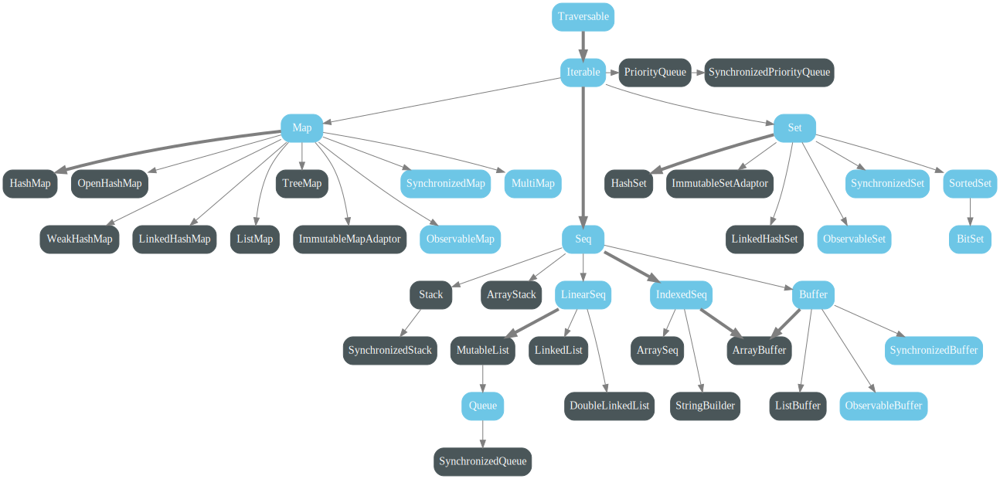

Scala notebook
Setting Up
Scala DataTypes
| Data Types | Description |
|---|---|
| Byte | 8-bit signed complement integer. The range is -128 to 127 |
| Short | 16-bit signed complement integer. The range is -32768 to 32767 |
| Int | 32-bit signed complement integer. The range is -2147483648 to 2147483647 |
| Long | 64-bit signed complement integer. The range is 127-9223372036854775808 to 9223372036854775807 |
| Float | 32-bit, IEEE 754 single-precision floating-point number |
| Double | 64-bit, IEEE 754 single-precision floating-point number |
| Char | 16-bit unsigned Unicode character, U+0000 to U+FFFF |
| String | String |
| Boolean | true or false |
| Unit | void |
| Null | null |
| Nothing | Subtype of anyother type |
| Any | supertype of anyother type |
| AnyRef | base type of any ref type |
Scala Escape character
| Escape character | Unicode | Description |
|---|---|---|
| \b | \u0008 | BS |
| \t | \u0009 | HT |
| \n | \u000a | LF |
| \f | \u000cF | FF |
| \r | \u000d | CR |
| " | \u0022 | " |
| ' | \u0027 | '' |
| \ | \u005c | \ |
Scala Reserved Symbols
// Keywords
<- // Used on for-comprehensions, to separate pattern from generator
=> // Used for function types, function literals and import renaming
// Reserved
( ) // Delimit expressions and parameters
[ ] // Delimit type parameters
{ } // Delimit blocks
. // Method call and path separator
// /* */ // Comments
# // Used in type notations
: // Type ascription or context bounds
<: >: // Upper and lower bounds
<% // View bounds (deprecated)
" """ // Strings
' // Indicate symbols and characters
@ // Annotations and variable binding on pattern matching
` // Denote constant or enable arbitrary identifiers
, // Parameter separator
; // Statement separator
_* // vararg expansion
_ // Many different meanings
Scala Collections
Immutable Collections

Mutable Collections

var x = 1 + 1
x = 3 // This compiles because "x" is declared with the "var" keyword.
println(x * x) // 9
As with values, you can explicitly state the type if you want:
var x: Int = 1 + 1
Scala Functional DataStructures
Sequence
List (Linear Sequence)
val list = "People" :: "love" :: "boys" :: Nil”
List operations:
:: // 1 :: List(2, 3)
::: // List(1,2) ::: List(3)
// List(1,2) ::: 3 :: List(4,5)
Array operations:
++ //arr + arr = Array(1, 2, 3, 1, 2, 3)
++: //arr + arr = Array(1, 2, 3, 1, 2, 3)
+: //arr + arr = Array(Array(1, 2, 3), 1, 2, 3)
:+ //arr :+ 1 = Array(1, 2, 3, 1)
Maps (Hash, HashMaps, Dictionary)
var map: Map[String,Int] = Map("Kaifeng" -> 21, "Qinren" -> 20)
var mapList = map map {kv => kv._1.startsWith("Q")}
var updateMap = map map {
case (k,v) => (k, v+1)
}
Traversing, Mapping, Filtering, Folding, Reducing
def drop (n : Int) : TraversableLike.Repr
/* Selects all elements except the first n elements. Returns a new traversable collection, which will be empty if this traversable collection has less than n elements. */
def dropWhile (p : (A) => Boolean) : TraversableLike.Repr
/* Drops the longest prefix of elements that satisfy a predicate.
Returns the longest suffix of this traversable collection whose first element does not satisfy the predicate p. */
def exists (p : (A) => Boolean) : Boolean
/*
Tests whether a predicate holds for at least one of the elements of this traversable collection. Returns true if so or false, otherwise.*/
def filter (p : (A) => Boolean) : TraversableLike.Repr
/* Selects all elements of this traversable collection that satisfy a predicate. Returns a new traversable collection consisting of all elements of this traversable collection that satisfy the given predicate p. The order of the elements is preserved. */
def filterNot (p : (A) => Boolean) : TraversableLike.Repr
/* The “negation” of filter; selects all elements of this traversable collection that do not satisfy the predicate p… */
def find (p : (A) => Boolean) : Option[A]
/* Finds the first element of the traversable collection satisfying a predicate, if any. Returns an Option containing the first element in the traversable collection that satisfies p, or None if none exists. */
def forall (p : (A) => Boolean) : Boolean
/* Tests whether a predicate holds for all elements of this traversable collection. Returns true if the given predicate p holds for all elements, or false if it doesn’t.*/
def partition (p : (A) => Boolean): (TraversableLike.Repr, TraversableLike.Repr)
/*Partitions this traversable collection in two traversable collections according to a predicate. Returns a pair of traversable collections: the first traversable collection consists of all elements that satisfy the predicate p and the second traversable collection consists of all elements that don’t. The relative order of the elements in the resulting traversable collections is the same as in the original traversable collection. */
def take (n : Int) : TraversableLike.Repr
/* Selects the first n elements. Returns a traversable collection consisting only of the first n elements of this traversable collection, or else the whole traversable collection, if it has less than n elements.*/
def takeWhile (p : (A) => Boolean) : TraversableLike.Repr
/* Takes the longest prefix of elements that satisfy a predicate. Returns the longest prefix of this traversable collection whose elements all satisfy the predicate p. */
(List(1, 2, 3, 4, 5, 6) foldRight List.empty[String]) {
(x, list) => ("[" + x + "]") :: list
}
// List[String] = List("[1]", "[2]", "[3]", "[4]", "[5]", "[6]")
Stream
Fibonacci Example:
import scala.math.BigInt
lazy val fibs: Stream[BigInt] = {
BigInt(0) #:: BigInt(1) #:: fibs.zip(fibs.tail).map(n => n._1 + n._2)
}
fibs take 10 foreach println
Scala Syntactic Sugar
-
a bis equivalent toa.b. -
a b cis equivalent toa.b(c), except whenbends in:. In that case,a b cis equivalent toc.b(a). -
a(b)is equivalent toa.apply(b)This is why the following definitions for an anonymous functions are identical:val square1 = (x: Int) => x*x val square2 = new Function1[Int,Int] { def apply(x: Int) = x*x }When calling
square1(y), you are actually callingsquare1.apply(y)whichsquare1must have as specified by theFunction1trait (orFunction2, etc...) -
a(b) = cis equivalent toa.update(b,c). Likewise,a(b,c) = dis equivalent toa.update(b,c,d)and so on. -
a.b = cis equivalent toa.b_=(c). When you create aval/varxin a Class/Object, Scala creates the methodsxandx_=for you. You can define these yourself, but if you definey_=you must defineyor it will not compile, for example:scala> val b = new Object{ def set_=(a: Int) = println(a) } b: java.lang.Object{def set_=(Int): Unit} = $anon$1@17e4cec b.set = 5 /* * <console>:6: error: value set is not a member of java.lang.Object{def set_=(Int): Unit} b.set = 5 ^ */ val c = new Object{ def set = 0 ; def set_=(a:Int) = println(a) } c: java.lang.Object{def set: Int; def set_=(Int): Unit} = $anon$1@95a253 scala> c.set = 5 5 -
-acorresponds toa.unary_-. Likewise for+a,~a, and!a. -
a <operator>= b, where<operator>is some set of special characters, is equivalent toa = a <operator> bonly ifadoesn't have the<operator>=method, for example:
Scala Control Structure
Designing Control Structure
One can design their own control structure like this:
def ~~(condition1: Boolean)(condition2: Boolean)(CodeBlock: Unit)= {
if (condition1 | condition2){
CodeBlock
}
}
~~(1>2)(2<1){
println("ok")
}
Scala For Translation
The syntax of for is closely related to the higher-order functions map,flatMap, and filter
def mapFun[T,U](xs:List[T],f:T=>U):List[U]=
for (x<-xs) yield f(x)
def flatMap[T,U](xs:List[T], f:T=>Iterable[U]):List[U] =
for (x <- xs, y <- f(x)) yield y
def filte[T](xs:List[T],p: T=>Boolean):List[T] =
for (x<-xs if p(x)) yield x
Scala Monoids
Monad Laws: Left Unit Law, Right Unit Law, Associative Law
flatMap for Option
abstract class Option[+T] {
def flatMap[U](f: T => Option[U]):Option[U] = this match {
case Some(x) => f(x)
case None => None
}
}
need to show 1)Some(x) flatMap f == f(x)3) opt flatMap f flatMap g == opt flatMap (x ⇒ f(x) flatMap g)
Try
abstract class Try[+T]
case class Success[T](x: T) extends Try[T]
case class Failure(sx:Exception) extends Try[Nothing]
Scala Method/Function
val f = (x: Integer) => x+1 #This is a function
def m(x:Integer):Integer={
x+1
}
Difference between Method and Function
- A function can be passed into a method as an argument, but not a method.
- A function must have an argument list, and a method can have no argument list.
Scala Partial Functions
Partial functions are partial in the sense that they aren’t defined for all possible inputs, only those inputs that match at least one of the specified case clauses. Only case clauses can be specified in a partial function and the entire function
must be enclosed in curly braces. In contrast, “regular” function literals can be wrapped in parentheses or curly braces. If the function is called with an input that doesn’t match one of the case clauses, a MatchError is thrown at runtime.
You can test if a PartialFunction will match an input using the isDefinedAt method. This function avoids the risk of throwing a MathError exception. You can “chain” PartialFunctions together: pf1 orElse pf2 orElse pf3 …. If pf1 doesn’t match, then pf2 is tried, then pf3, etc. A MathError is only thrown if none of them matches. The following example illustrates these points:
val pf1: PartialFunction[Any,String] = { case s:String => "YES" }
val pf2: PartialFunction[Any,String] = { case d:Double => "YES" }
val pf = pf1 orElse pf2
def tryPF(x: Any, f: PartialFunction[Any,String]): String =
try { f(x).toString } catch { case _: MatchError => "ERROR!" }
def d(x: Any, f: PartialFunction[Any,String]) =
f.isDefinedAt(x).toString”
Scala Call by value v.s. Call by name
Scala Call by name argument is also refered to a lazy argument because scala do not calculate the result until using it:
def first(a: Int, b: Int): Int = {
a
}
def first1(a: Int, b: =>Int): Int = {
a
}
first(3 + 4, 5 + 6) // will be reduced to first(7, 5 + 6), then first(7, 11), and then 7
first1(3 + 4, 5 + 6) // will be reduced to first(7, 5 + 6), then 7
For another clearer example:
def a(x: Int){
println(x)
println(x)
println(x)
}
def b(x: =>Int){
println(x)
println(x)
println(x)
}
var x: Int = 1
a{x+=1;x} // print 1 1 1
b{x+=1;x} // print 2 3 4
Scala Currying
Obvious syntax
val zscore = (mean: R, sd: R) => (x: R) => (x - mean) / sd
def zscore(mean: R, sd: R) = (x: R) => (x - mean) / sd
Sugar
def zscore(mean: R, sd: R)(x: R) = (x - mean) / sd
Scala classes and traits
Private Members and Getter/Setter Syntax
class Point {
private var _x = 0
private var _y = 0
private val bound = 100
def x = _x
def x_= (newValue: Int): Unit = {
if (newValue < bound) _x = newValue else printWarning
}
def y = _y
def y_= (newValue: Int): Unit = {
if (newValue < bound) _y = newValue else printWarning
}
private def printWarning = println("WARNING: Out of bounds")
}
val point1 = new Point
point1.x = 99
point1.y = 101 // prints the warning
Using traits
Traits are used to share interfaces and fields between classes. They are similar to Java 8’s interfaces. Classes and objects can extend traits but traits cannot be instantiated and therefore have no parameters.
trait Iterator[A] {
def hasNext: Boolean
def next(): A
}
class IntIterator(to: Int) extends Iterator[Int] {
private var current = 0
override def hasNext: Boolean = current < to
override def next(): Int = {
if (hasNext) {
val t = current
current += 1
t
} else 0
}
}
val iterator = new IntIterator(10)
iterator.next() // returns 0
iterator.next() // returns 1
Singleton object
An object is a class that has exactly one instance. It is created lazily when it is referenced, like a lazy val.
As a top-level value, an object is a singleton.
As a member of an enclosing class or as a local value, it behaves exactly like a lazy val.
package logging
object Logger {
def info(message: String): Unit = println(s"INFO: $message")
}
import logging.Logger.info
class Project(name: String, daysToComplete: Int)
class Test {
val project1 = new Project("TPS Reports", 1)
val project2 = new Project("Website redesign", 5)
info("Created projects") // Prints "INFO: Created projects"
}
Companion object
An object with the same name as a class is called a companion object. Conversely, the class is the object’s companion class. A companion class or object can access the private members of its companion. Use a companion object for methods and values which are not specific to instances of the companion class.
import scala.math._
case class Circle(radius: Double) {
import Circle._
def area: Double = calculateArea(radius)
}
object Circle {
private def calculateArea(radius: Double): Double = Pi * pow(radius, 2.0)
}
val circle1 = Circle(5.0)
circle1.area
Generic class
class Stack[A] {
private var elements: List[A] = Nil
def push(x: A) { elements = x :: elements }
def peek: A = elements.head
def pop(): A = {
val currentTop = peek
elements = elements.tail
currentTop
}
}
Case Classes
Case classes are like regular classes with a few key differences which we will go over. Case classes are good for modeling immutable data.
A minimal case class requires the keywords case class, an identifier, and a parameter list (which may be empty):
case class Book(isbn: String)
val frankenstein = Book("978-0486282114")
Case classes are especially useful for pattern matching.
abstract class Notification
case class Email(sender: String, title: String, body: String) extends Notification
case class SMS(caller: String, message: String) extends Notification
case class VoiceRecording(contactName: String, link: String) extends Notification
Notification is an abstract super class which has three concrete Notification types implemented with case classes Email, SMS, and VoiceRecording.
Now we can do pattern matching on these case classes.
Combining the above three structure
trait Animal
case class Dog(name: String) extends Animal
case class Cat(name: String) extends Animal
case object Woodpecker extends Animal
object CaseClassTest extends App {
def determineType(x: Animal): String = x match {
case Dog(moniker) => "Got a Dog, name = " + moniker
case _:Cat => "Got a Cat (ignoring the name)"
case Woodpecker => "That was a Woodpecker"
case _ => "That was something else"
}
println(determineType(new Cat("Sanhua")))
println(determineType(new Dog("Wangcai")))
}
Variances
Say C[T] us a paramterized type and A,B are types such that A <: B.
In general there are three possible relationships between c[A] and C[B]:
C[A] <: C[B] C is covariant
C[A] >: C[B] C is contravariant
C[A] ? C[B] C is nonvariant
class Foo[+A] // A covariant class
class Bar[-A] // A contravariant class
class Baz[A] // An invariant class
Covariance
A type parameter A of a generic class can be made covariant by using the annotation +A. For some class List[+A], making A covariant
implies that for two types A and B where
A is a subtype of B, then List[A] is a subtype of List[B]. This allows us to make very useful and intuitive subtyping relationships
using generics.
Contravariance
A type parameter A of a generic class can be made contravariant by using the annotation -A. This creates a subtyping relationship between the class and its type parameter that is similar,
but opposite to what we get with covariance. That is, for some class Writer[-A], making A contravariant implies that for two types A and B where A is a subtype of B, Writer[B] is a subtype of Writer[A].
Upper and Lower type bound
In Scala, type parameters and abstract type members may be constrained by a type bound. Such type
bounds limit the concrete values of the type variables and possibly reveal more information about the members of such types. An upper type bound T <: A declares that type variable T refers to a subtype of type
A. Here is an example that demonstrates upper type bound for a type parameter of class PetContainer:
abstract class Animal {
def name: String
}
abstract class Pet extends Animal {}
class Cat extends Pet {
override def name: String = "Cat"
}
class Dog extends Pet {
override def name: String = "Dog"
}
class Lion extends Animal {
override def name: String = "Lion"
}
class PetContainer[P <: Pet](p: P) {
def pet: P = p
}
val dogContainer = new PetContainer[Dog](new Dog)
val catContainer = new PetContainer[Cat](new Cat)
While upper type bounds limit a type to a subtype of another type, lower type bounds declare a type to be a supertype of another type. The term B >: A expresses that the type parameter B or the abstract type B refer to a supertype of type A. In most cases, A will be the type parameter
of the class and B will be the type parameter of a method.
trait Node[+B] {
def prepend(elem: B): Node[B]
}
case class ListNode[+B](h: B, t: Node[B]) extends Node[B] {
def prepend(elem: B): ListNode[B] = ListNode(elem, this)
def head: B = h
def tail: Node[B] = t
}
case class Nil[+B]() extends Node[B] {
def prepend(elem: B): ListNode[B] = ListNode(elem, this)
}
Here is an example from Functional Programming Principles in Scala
trait Foo[+T] {
def prepend(x: T):List[T] = List(x) //wrong covariant type T occurs in contravariant position in type T of value x
def prepend[U >: T](elem: U):List[U] = List(elem) //correct prepend(x:B) => List[A]
}
trait D[-T,+U] { // T2 <: T1, U1 <: U2, then T1 => U1 <: T2 => U2
def f(x:T):U
}
Self-type
Self-types are a way to declare that a trait must be mixed into another trait, even though it doesn’t directly extend it. That makes the members of the dependency available without imports.
A self-type is a way to narrow the type of this or another identifier that aliases this. The syntax looks like normal function syntax but means something entirely different.
To use a self-type in a trait, write an identifier, the type of another trait to mix in, and a => (e.g. someIdentifier: SomeOtherTrait =>)
trait People {
def name: String
}
trait Boy {
this: People => // reassign this
def say(Text: String) = println(s"$name says $Text")
}
class MyBoy(val name_ : String) extends People with Boy { // We mixin User because Tweeter required it
def name = s"real $name_"
}
val Qinren = new MyBoy("Qinren")
Qinren.say("I love you") // prints "Qinren says I love you"
Without Using the new Keyword
There are two ways to do this:
-
Create a companion object for your class, and define an apply method in the companion object with the desired constructor signature.
class Person { var name: String = _ } object Person { def apply(name: String): Person = { var p = new Person p.name = name p } } //To create multiple constructors when manually defining your own apply method, just define multiple apply methods in the companion object that provide the constructor signatures you want: class Person { var name = ""; var age = 0} object Person { def apply(name: String): Person = { var p = new Person p.name = name p } def apply(name:String, age:Int): Person = { var p = new Person p.name = name; p.age = age p } }The
applymethod also has another role in matching argument when creating new instance. For example:class Person{def speak:Unit={}} object Person{ private class Boy extends Person{ override def speak: Unit = { println("I love boys") } } private class Girl extends Person{ override def speak: Unit = { println("I love boys too")} } def apply(s:String): Person = s match { case "myBoy" => new Boy case "Mygirl" => new Girl case _ => new Person } } var kf = Person("myBoy") -
Define your class as a case class.
case class Person (var name: String) val p = Person("Shang Kaifeng")
Scala Implicit
Implicit parameters
A method can have an implicit parameter list, marked by the implicit keyword at the start of the parameter list. If the parameters in that parameter list are not passed as usual, Scala will look if it can get an implicit value of the correct type, and if it can, pass it automatically.
The places Scala will look for these parameters fall into two categories:
-
Where does the compiler look for candidate definitions when it tries to infer an implicit parameter of type T?
The compiler searches for definitions that:
- have type T,
- are marked implicit,
- are visible at the point of the function call, or are defined in a companion object associated with T.
If there is a single (most specific) definition, it will be taken as the actual argument for the implicit parameter. Otherwise an error is reported.
abstract class Monoid[A] {
def add(x: A, y: A): A
def unit: A
}
object ImplicitTest {
implicit val stringMonoid: Monoid[String] = new Monoid[String] {
def add(x: String, y: String): String = x concat y
def unit: String = ""
}
implicit val intMonoid: Monoid[Int] = new Monoid[Int] {
def add(x: Int, y: Int): Int = x + y
def unit: Int = 0
}
def sum[A](xs: List[A])(implicit m: Monoid[A]): A =
if (xs.isEmpty) m.unit
else m.add(xs.head, sum(xs.tail))
def main(args: Array[String]): Unit = {
println(sum(List(1, 2, 3))) // uses intMonoid implicitly
println(sum(List("a", "b", "c"))) // uses stringMonoid implicitly
}
}
Implicit Search Scope
The search for an implicit value of type T first looks at all the implicit definitions that are visible (inherited, imported, or defined in an enclosing scope).
If the compiler does not find an implicit instance matching the queried type T in the lexical scope, it continues searching in the companion objects associated with T. There are two concepts to explain here: companion objects and types associated with other types.
A companion object is an object that has the same name as a type. For instance, the object scala.math.Ordering is the companion of the type scala.math.Ordering.
The types associated with a type T are:
- if T has parent types T₁ with T₂ ... with Tₙ, the union of the parts of T₁, ... Tₙ as well as T itself,
- if T is a parameterized type S[T₁, T₂, ..., Tₙ], the union of the parts of S and T₁, ..., Tₙ,
- otherwise, just T itself.
As an example, consider the following type hierarchy:
trait Foo[A]
trait Bar[A] extends Foo[A]
trait Baz[A] extends Bar[A]
trait X
trait Y extends X
If an implicit value of type Bar[Y] is required, the compiler will look for implicit definitions in the following companion objects:
- Bar, because it is a part of Bar[Y],
- Y, because it is a part of Bar[Y],
- Foo, because it is a parent type of Bar,
- and X, because it is a parent type of Y.
However, the Baz companion object will not be visited.
Implicit Conversions
Implicit conversions in Scala are the set of methods that are apply when an object of wrong type is used. It allows the compiler to automatically convert of one type to another.
An implicit conversion from type S to type T is defined by an implicit value which has function type S => T, or by an implicit method convertible to a value
of that type.
Implicit conversions are applied in two situations:
- If an expression
eis of typeS, andSdoes not conform to the expression’s expected typeT. - In a selection
e.mwitheof typeS, if the selectormdoes not denote a member ofS. - Un an application
e.m(args)witheof typeT, ifTdoes define some member(s) namedm, but none of these members can be applied to the argumentsargs.
Example1:
We can convert Int to String.
import scala.language.implicitConversions
implicit def conv1(x: Int): String = x.toString
implicit def conv2(x: => Int): String = x.toString
val x: String = 0 // Compiles in Scala2 (uses `conv1`)
Example2: ❓
An implicit method Int => Ordered[Int] is provided automatically through scala.Predef.intWrapper. An example of an implicit method List[A] => Ordered[List[A]] is provided below.
More generally, a method definition such as:
def f[A: U₁ ... : Uₙ](ps): R = ...
expands to
def f[A](ps)(implicit ev₁: U₁[A], ..., evₙ: Uₙ[A]): R = ...
e.g.
import scala.language.implicitConversions
implicit def list2ordered[A](x: List[A])
(implicit elem2ordered: A => Ordered[A]): Ordered[List[A]] =
new Ordered[List[A]] {
//replace with a more useful implementation
def compare(that: List[A]): Int = 1
}
Sorting a list of list of numbers:
implicit def orderingList[A](implicit ord: Ordering[A]): Ordering[List[A]] =
new Ordering[List[A]] {
def compare(xs0: List[A], ys0: List[A]) = {
def loop(xs: List[A], ys: List[A]): Int = (xs, ys) match {
case (x :: xsTail, y :: ysTail) =>
val c = ord.compare(x, y)
if (c != 0) c else loop(xsTail, ysTail)
case (Nil, Nil) => 0
case (_, Nil) => 1
case (Nil, _) => -1
}
loop(xs0, ys0)
}
}
✨Sort a pair of data:
implicit def orderingPair[A, B](implicit
orderingA: Ordering[A],
orderingB: Ordering[B]
): Ordering[(A, B)] =
new Ordering[(A, B)] {
def compare(pair1: (A, B), pair2: (A, B)): Int = {
val firstCriteria = orderingA.compare(pair1._1, pair2._1)
if (firstCriteria != 0) firstCriteria
else orderingB.compare(pair1._2, pair2._2)
}
}
sort(movies)(movie => (movie.rating, movie.duration))(
orderingPair(Ordering.Int, Ordering.Int)
)
Note that in the standard library the sort function that we have defined here is already available as a method sortBy on collections.
Example3:
This example enable adding method to an existing type String. (a more direct syntax in Dotty (scala3) have solution ot the same problem)
class StringImprovements(val s: String) {
def increment = s.map(c => (c + 1).toChar)
}
implicit def stringToString(s: String) = new StringImprovements(s)
val name2 = "rg`mfj`hedmf".increment
In dotr:
def (s:String).increment = s.map(c => (c + 1).toChar)
"rg`mfj`hedmf".increment
Implicitly
Predef defines a method called implicityly. Combined with a type signature addition, it provides a useful shorthand way of defining method signatures that take a single implicit argument, where that argument is parameterized type.
Example4:
import math.Ordering
case class MyList[A](list:List[A]){
def sortBy1[B](f: A => B)(implicit ord: Ordering[B]):List[A] = list.sortBy(f)(ord)
def sortBy2[B : Ordering](f: A => B):List[A] = list.sortBy(f)(implicitly[Ordering[B]])
}
val testLst: MyList[Int] = MyList(List(1,8,7,4,5,9,6,3,2,0))
testLst.sortBy(_)
Implicit Evidence
We need to constrain the allowed types and not provide additional processing capability. That is, we need "evidence" that provide additional processing capability.
trait TraversableOnce[+A]{
def toMap[T,U](implicit evidence: <:<[A,(T,U)]): immutable.Map[T,U])
}
It uses a type defined in Predef called <:<, named to resemble the type parameter constraint <:, e.g., A <: B.
Type Class Pattern
Type classes help us avoid the temptation of creating "kitchen-sink" abstractions, like Java's Object, because we can add behavior on an ad hoc basis. We try not to modifying the types but using the implicit mechanism to wrap objects with types that provide the behaviors we need.
Scala Functional Programming
Functional Data Structure
type Set = Int => Boolean // type "Set" as a function
def contains(s:Set,i:Int):Boolean = s(i)
def singleton(i:Int):Set = (f:Int) => f == i // returns a Set function
def union(s1: Set, s2: Set):Set = x => s1(x) || s2(x)
def intersct(s: FunSet, t: FunSet): FunSet = x => s(x) && t(x)
def diff(s: FunSet, t: FunSet): FunSet = x => s(x) && !t(x)
def filter(s: FunSet, p: Int => Boolean): FunSet = intersect(s,p)
def exists(s: FunSet, p: Int => Boolean): Boolean = !forall(s, x => p(x))
def map(s: FunSet, f: Int => Int): FunSet = x => exists(s, y => f(y) == x)
Or alternatively, we make these functional data structure as objects:
abstract class IntSet { //or trait as interface
def filter(f:Int => Boolean):IntSet
def filterS(f:Int => Boolean, s:IntSet):IntSet
def union(that:IntSet):IntSet
def contains(x:Int):Boolean
def incl(x:Int):IntSet
}
class NonEmpty(elem:Int, left:IntSet, right:IntSet) extends IntSet {
def filter(f:Int => Boolean):IntSet = filterS(f, new Empty)
def filterS(f:Int => Boolean, s:IntSet):IntSet = {
if f(elem) left.filterS(f, right.filterS(f, s.incl(elem)))
else left.filterS(f, right.filterS(f, s))
}
def union(that:IntSet):IntSet = right.union(left.union(that.incl(elem)))
def contains(x:Int):Boolean =
if (x < elem) left contains x
else if (x > elem) right contains x
else true
def incl(x:Int):IntSet =
if (x < elem) new NonEmpty(elem, left incl x, right)
else if (x > elem) new NonEmpty(elem, left, right incl x)
else this
}
class Empty extends IntSet {
def filter(f:Int => Boolean):IntSet = new Empty
def filterS(f:Int => Boolean, s:IntSet):IntSet = s
def union(that: IntSet):IntSet = that
def contains(x:Int):Boolean = false
def incl(x:Int):IntSet = new NonEmpty(x, new Empty, new Empty)
}
This is actually a binary search tree like data structure. Note that Int can be replace by other comparable types.
Extending Iterable
We can customize datastructures with Iterable (Node that after scala 2.13 the Traversable interaface is de)
trait LinkedList[T] extends Iterable[T] {
val headValue:T
val tailList
}
object Nil extends LinkedList[AnyVal] {
lazy val headValue = throw new IllegalAccessException("head of Nil")
lazy val tailValue = throw new IllegalAccessException("tail of Nil")
override def iterator:Iterator[AnyVal] = Iterator.empty
}
class Node[T](val headValue: T, val tailList: LinkedList[T]) extends LinkedList[T] {
override def iterator: Iterator[T] = Iterator
.iterate(this: LinkedList[T])(_.tailList)
.takeWhile(_ != Nil)
.map(_.nodeValue)
}